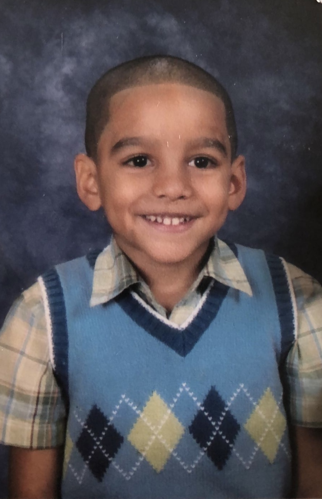
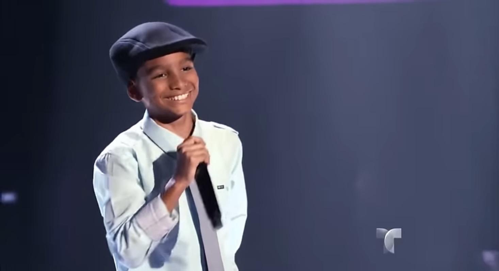
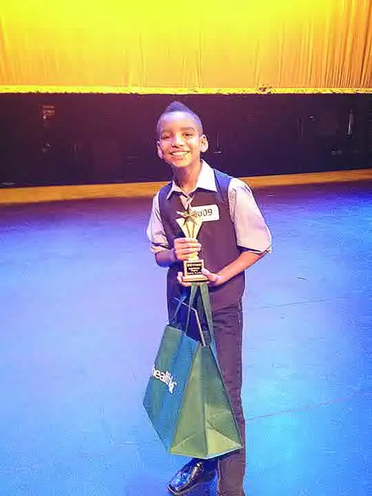

I was born on March 23, 2002, in the Bronx, New York. Growing up there exposed me to so many beautiful cultures and genres, from Hip-hop and R&B to Bachata, Merengue, and Reggaeton.
Feature
P.22
WHO IS ZEKE PUJOLS
Zeke on his Bronx roots, La Voz Kids, losing and regaining his voice, and the path from TikTok covers to his own music.


For as long as I can remember, I’ve had a microphone in my hand.
Singing and rapping at family parties was my introduction to performing, and I’ve been in love with that feeling ever since.
In fifth grade, I auditioned for the Spanish reality show La Voz Kids. Being surrounded by so many talented kids my age was an unforgettable learning experience that I will cherish forever. Most importantly, it taught me that I love being on stage. As I entered middle school, I picked up the guitar and piano and discovered a passion for musical theater, performing in school plays and local talent shows.
Then, in eighth grade, puberty hit me HARD. My voice changed so much that I almost gave up on my dream of singing entirely. I turned to basketball, but once I reached high school, I quickly realized my chances of making the NBA were about as good as my chances of learning to fly, so, THANKFULLY, I gave that up. I joined the high school choir, and as I began singing consistently again, I started to get comfortable with my changing voice and my passion for singing rekindled.
During my sophomore year, my friend convinced me to start writing and recording my own music in his basement. I released my first song ever on SoundCloud with some friends, but hopefully you never have to hear that. Senior year, I started posting on TikTok, and throughout the pandemic, I started to grow a following by posting covers. In 2024, I decided to really focus on sharing my own music online and creating my sound. In 2025, I released my first ever EP “Can I Bother You?” and I’m excited to continue my journey and bring you along.



Interview
P.38
Q & A
In His
Own Words
Own Words
Q
“Can I Bother You?” was your first official EP release. Looking back, how would you describe the whole process of making and releasing it?
A
Making “Can I Bother You?” was so much fun. The entire process took me about a year and taught me so much. Although it was only an EP, I treated it like an album and wanted to tell a story through the compilation of songs. The tracklist went through so many changes but “Lose Your Turn” was actually the first song I finished and I knew I wanted to end the EP with that one, so I was almost working backwards while creating the project. It’s the best feeling finally releasing it and seeing which ones people resonate with.
Q
How do you approach writing your songs? Who are you talking about in your songs?
A
This question is definitely one I get asked a lot. I think songwriting is the coolest thing in the world because I see it as a balance between telling your personal story while also hopefully being relatable to the listener. So when I tell my stories I like to go based on my personal experiences in my life, but I also pull from other people's experiences and my imagination even. So whenever I write a song, I'm always pulling from different things just because people never really know what's true and what's not true and I think it's fun that way. I like having people guessing what’s actually going on in my life.
Q
Most of your songs are written in Spanish and English. Why is that? What is the significance of it?
A
Growing up in the Bronx, I was listening to a lot of hip-hop, R&B, bachata, salsa, merengue, and reggaeton, etc. I really enjoyed singing both songs in English and songs in Spanish, but growing up, people in my family would ask me, "Are you going to be a Spanish singer? Are you going to be an English singer?" It always felt like I had to pick a side and I never liked answering that question. One day I was just freestyling while coming up with the idea for my song "Who Can Blame Her," and the Spanglish just kind of came out organically, it felt really natural. Since then, I’ve been trying to incorporate Spanglish into my songs for my younger self and for all those who don’t want to feel like they need to pick a side.